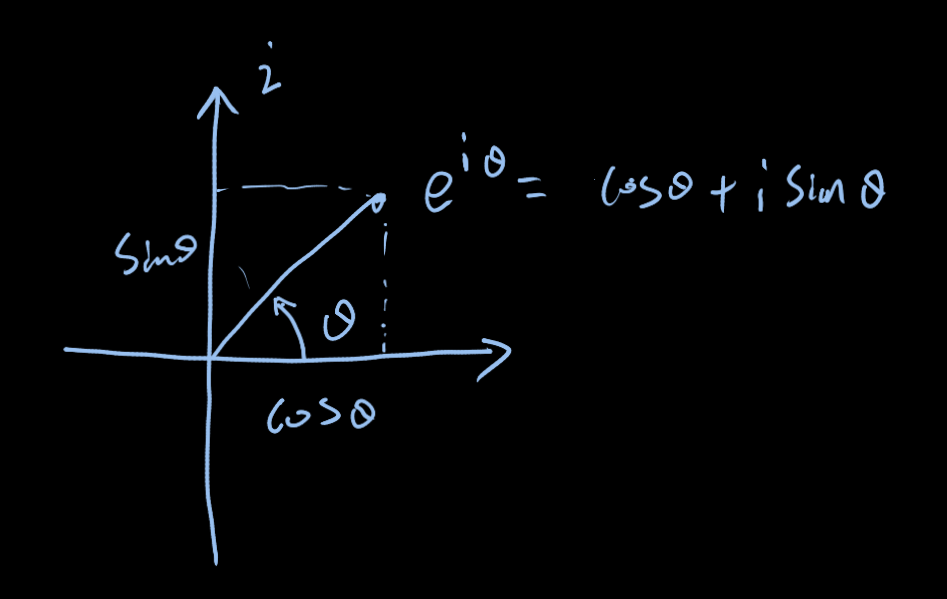

uojp450单位根反演与优化
欧拉公式
\[ e^{i\theta} = cos(\theta) + i * sin(\theta) \] 上述表达式成立是根据\(e^{x}\)在0处的泰勒展开得到： \[ \begin{matrix} e^{i\theta} &=& \sum_{j = 0}^{\infty}\frac{(i\theta)^{j}}{j!}\\ &=& \sum_{j = 0}^{\infty}(-1)^{j}\frac{(\theta)^{2j}}{(2j)!} + i * \sum_{j = 0}^{\infty}(-1)^{j}\frac{(\theta)^{2j + 1}}{(2j+1)!} \end{matrix} \]
在复平面中\(e^{i\theta} = cos(\theta) + i * sin(\theta)\)可以表示为如下： 
由这个可知单位根可用来左旋转，因为： \[ e^{i\beta} * e^{i\theta} = e^{i(\theta + \beta)} \]
也能知道单位根\(w_{n}\)旋转n次为1.
单位根
单位根是n次幂为1的复数，通常值为\(w_{n} = e^{\frac{2\pi}{n}i} = cos(\frac{2\pi}{n}) + i * sin(\frac{2\pi}{n})\)
观察根据欧拉公式可知，
单位根反演
表达式\([d|n]\)表示n能否被d整除，如能整除\([d|n] = 1\)否则\([d|n] = 0\)，单位根反演是表达式\([d|n]\)的一种计算方法。
\[ \left\{\begin{matrix} [d|n] = \frac{1}{d}\sum^{d - 1}_{i = 0}w_{d}^{in} \\ w_{d}^{i} \ne 1 (i < d)\\ w_{d}^d = 1 \end{matrix}\right. \]
上述表达式的主要利用等比数列求和得到,可见下方变换。
\[ \begin{matrix} [d|n] &= \frac{1}{d}\sum^{d - 1}_{i = 0}w_{d}^{in} \\ & = \frac{1}{d}\frac{1 - w_{d}^{nd}}{1 - w_{d}^{n}} \end{matrix} \]
可以看出，\(w_{d}^{d} = 1\)且\(w_{d}^{i} != 1\)是上式成立的一个条件。满足这个条件的有两个：
- 单位根\(w_{d} = sin(\theta) + i * cos(\theta)\)
- (在一些特殊情况下才成立)在对质数P的模运算中，利用费马小定理可得到： \[ w_{d} = x^{\frac{P - 1}{d}} mod P \]
注意,需要满足(P - 1) % d == 0，同时x值要特殊选取，验证所得\(w_{d}\)是否满足： \[ \begin{matrix} w_{d}^{i} \ne 1 (i < d)\\ w_{d}^d = 1 \end{matrix} \]
单位根的应用
1. 与生成函数一起使用
生成函数简介
生成函数的目的是为了快速计算常见的一些表达式的和，或者求一些递归关系的通项。例如\(\frac{n!}{a!(n - a)!}\)一些项的和
生成函数
求n个水果的组合方案，满足反感的条件是，“1. 苹果偶数个，2.橘子最多两个，3.香蕉数量是3的倍数，最多一个梨”
\[ \begin{matrix} &&(1 + x^2 + x^4 + ... + x^{2i} + ...)(1 + x + x^2)(1 + x^3 + x^6 + ... + x^{3i} + ...)(1 + x)\\ &=& \frac{1}{1 - x^{2}} \frac{1 - x^{3}}{1 - x}\frac{1}{1 - x^{3}}(1+x)\\ &=& \frac{1}{(1 - x)^{2}} \\ &=& (x - 1)^{-2}\\ &=& \sum^{\infty}_{i = 0}C_{-2}^{n}x^(n)(-1)^(n + 2) \\ && // 这里既可以用广义二项式定理，也可已使用先积分再求导，求解项 \\ &=& \sum_{i = 0}^{\infty}(n + 1)x^{n} \end{matrix} \]
广义二项式参考 乘起来后，其中n的幂次前系数就是方案数
诀窍就在于，用于累积的量作为x的幂次，乘法过程中，相当于把这些方案的部分进行组合。
指数生成函数
如果偶数个方格被涂成红色以及奇数个方格被涂成白色，试确定用红、白、蓝和绿为1行列棋盘的方格着色的方案数:
将格子数作为幂次，观察如下表达式： \[ (x^{0} + x^{2} + x^{4} + ... + x^{2i} + ...)(x^{1} + x^{3} + x^{5} + ... + x^{2i + 1} + ...) \]
对于两项\(x^{4} * x^{5}\)相乘，其代表了拿出4个红色5个白色图砖块，但是之中没有给出方案上数，这种组合的方案数应为$，理由是先将所有砖视为不同则排列数为9!，4个红砖相同则需要除以4!，5个白砖相同除以5!。所以通过改动如下表达式可以得到最终目标。
\[ \begin{matrix} &&n!(x^{0} + \frac{x^{2}}{2!} + \frac{x^{4}}{4!} + ... + \frac{x^{2i}}{(2i)!} + ...)(x^{1} + \frac{x^{3}}{3!}+ \frac{x^{5}}{5!} + ... + \frac{x^{2i + 1}}{(2i + 1)!} + ...)\\ &=& n!(\frac{e^{x} + e^{-x}}{2})(\frac{e^{x} - e ^ {-x}}{2})\\ &=& n!(\frac{e^{2x} - e^{-2x}}{4}) \end{matrix} \] 这样得到\(x^{n}\)前的系数就是我们要求的目标答案
应用uojp450
题意 ： 共k个复读机，n个复读机会，每个复读机复读次数是d的倍数有多少中方案, 其中d的范围为[1-3]，答案对19491001取模。
可以知道生成函数如下： \(n!((x^{0} + x^{d} / d! + \frac{x^{2d}}{2d!} + ... ) ^ k)\)中\(x^{n}\)前面的系数就是答案。为了求表达式，可以使用单位根反演。
\[ \begin{matrix} &&n!((x^{0} + \frac{x^{d}}{d!} + \frac{x^{2d}}{2d!} + ... ) ^ k) \\ &=& n!(\sum_{i = 0}^{\infty}(\frac{x^{i}}{i!})[d|i]) \\ &=& n!(\sum_{i = 0}^{\infty}(\frac{x^{i}}{i!})\frac{1}{d}\sum_{j = 0}^{d - 1}w_{d}^{ij}) \\ &=& n!(\sum_{j = 0}^{d - 1}\sum_{i = 0}^{\infty}(\frac{(xw_{d}^{j})^{i}}{i!})) \\ &=& \frac{n!}{d}(\sum_{j = 0}^{d - 1}e^{w_{d}^{j}x}) \\ \end{matrix} \] 随后使用泰勒展开求系数即可, 在模运算下，\(w_d\)可以不用复数，而使用取模意义下的单位根反演
1 | /*================================================================ |